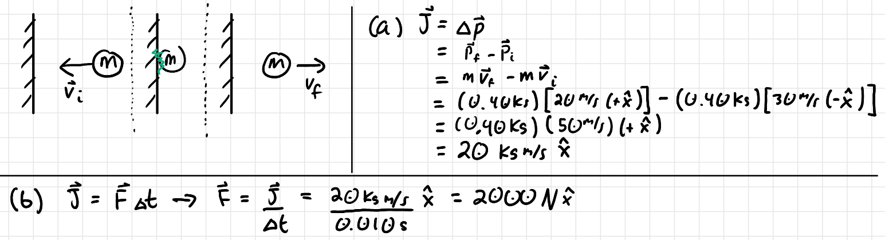
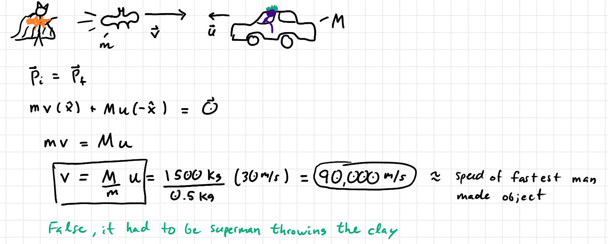
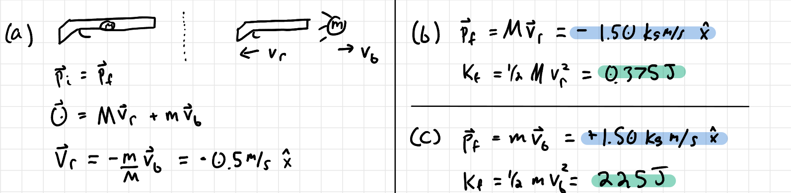

University Physics I

8: Momentum
PQ: Tennis Momentum Hit
A pro tennis player hits a ball (initially at rest) and gives the ball a final speed of 55 m/s. The ball has a mass of 0.060 kg. If the racket and ball are in contact for 55 milli-seconds what is the average force the player applies to the ball?
PQ: Tennis Momentum Hit (sol)
$$F=\frac{\Delta p}{\Delta t}=\frac{mv_f-mv_i}{\Delta t}$$ $$ = \frac{(0.060\text{kg})(55\text{m/s})-0}{(0.004\text{s})}$$ $$ = 825\text{N}$$PQ: Ball Hit Wall
You throw a 0.40kg ball against a brick wall. It is moving to the left at 30m/s when it hits the wall and rebounds to the right at 20m/s.
- Find the impulse on the ball.
- If the ball is in contact for 0.010s with the wall, find the average force on the ball.
PQ: Ball Hit Wall (sol)
PQ: Joker's Momentum
The Joker is driving a 1500 kg clown car 30 m/s at Batman. Batman throws a 0.5 kg block of bat-clay at the clown car and stops the Joker. How fast did Batman throw the clay?
PQ: Joker's Momentum (sol)
PQ: Rifle Recoil
A rifle of mass $M$=3.00kg fires a bullet of
mass $m=5.00g$ at a speed of 300m/s.
PQ: Rifle Recoil (sol)
PQ: 2D Elastic Collision
Puck A ($m_A=0.5$kg) moving at $v_i=4$m/s collides with puck B ($m_B=0.3$kg) initially at rest. Puck A deflects at an angle $\alpha$ at speed $v_f=2$m/s, and puck B deflects at an angle $\beta$ at unknown speed $u_f$. Find the angles $\alpha$, $\beta$, and the speed $u_f$.